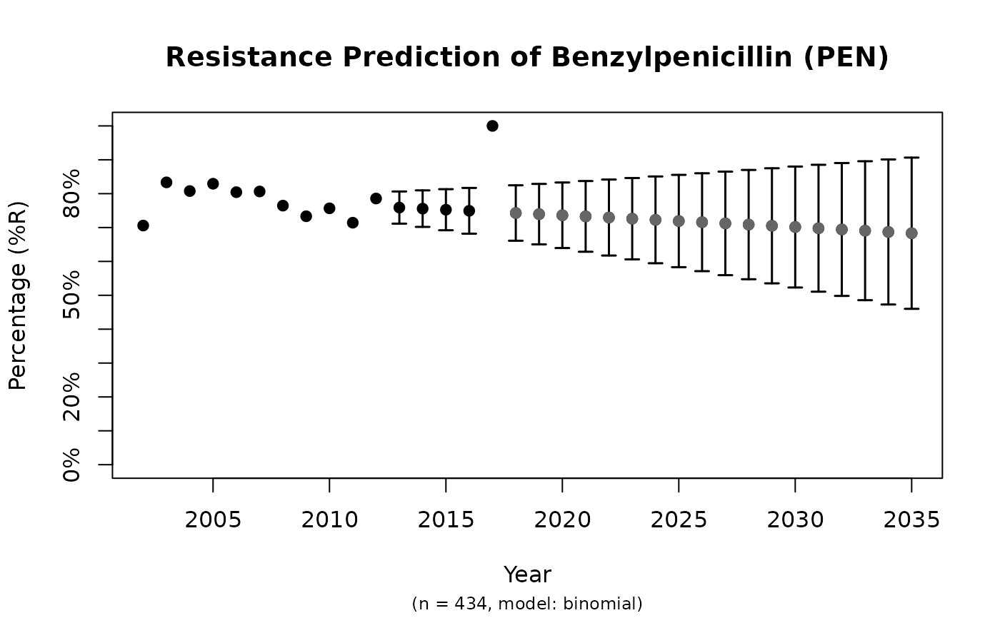
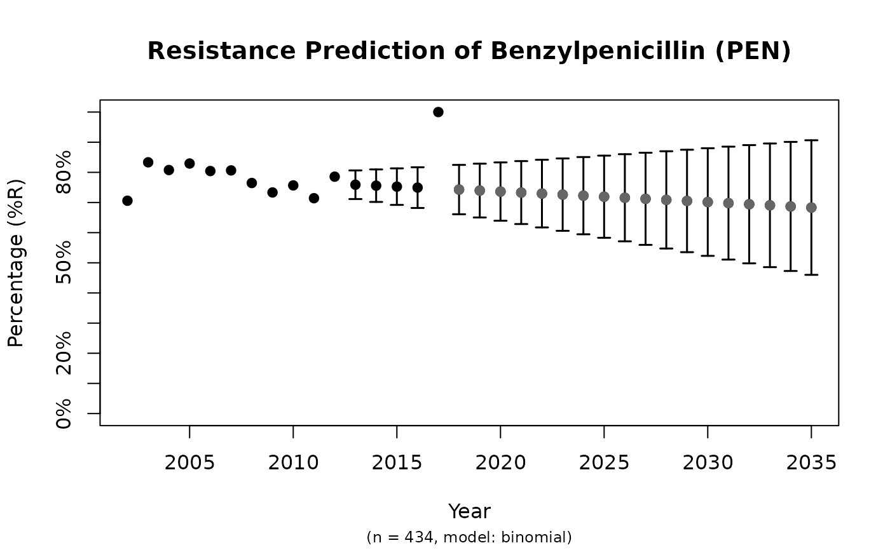

Create a prediction model to predict antimicrobial resistance for the next years. Standard errors (SE) will be returned as columns se_min and se_max. See Examples for a real live example.
NOTE: These functions are deprecated and will be removed in a future version. Use the AMR package combined with the tidymodels framework instead, for which we have written a basic and short introduction on our website.
Usage
resistance_predict(x, col_ab, col_date = NULL, year_min = NULL,
year_max = NULL, year_every = 1, minimum = 30, model = NULL,
I_as_S = TRUE, preserve_measurements = TRUE, info = interactive(), ...)
sir_predict(x, col_ab, col_date = NULL, year_min = NULL, year_max = NULL,
year_every = 1, minimum = 30, model = NULL, I_as_S = TRUE,
preserve_measurements = TRUE, info = interactive(), ...)
# S3 method for class 'resistance_predict'
plot(x, main = paste("Resistance Prediction of",
x_name), ...)
ggplot_sir_predict(x, main = paste("Resistance Prediction of", x_name),
ribbon = TRUE, ...)
# S3 method for class 'resistance_predict'
autoplot(object,
main = paste("Resistance Prediction of", x_name), ribbon = TRUE, ...)Arguments
- x
A data.frame containing isolates. Can be left blank for automatic determination, see Examples.
- col_ab
Column name of
xcontaining antimicrobial interpretations ("R","I"and"S").- col_date
Column name of the date, will be used to calculate years if this column doesn't consist of years already - the default is the first column of with a date class.
- year_min
Lowest year to use in the prediction model, dafaults to the lowest year in
col_date.- year_max
Highest year to use in the prediction model - the default is 10 years after today.
- year_every
Unit of sequence between lowest year found in the data and
year_max.- minimum
Minimal amount of available isolates per year to include. Years containing less observations will be estimated by the model.
- model
The statistical model of choice. This could be a generalised linear regression model with binomial distribution (i.e. using
glm(..., family = binomial), assuming that a period of zero resistance was followed by a period of increasing resistance leading slowly to more and more resistance. See Details for all valid options.- I_as_S
A logical to indicate whether values
"I"should be treated as"S"(will otherwise be treated as"R"). The default,TRUE, follows the redefinition by EUCAST about the interpretation of I (increased exposure) in 2019, see section Interpretation of S, I and R below.- preserve_measurements
A logical to indicate whether predictions of years that are actually available in the data should be overwritten by the original data. The standard errors of those years will be
NA.- info
A logical to indicate whether textual analysis should be printed with the name and
summary()of the statistical model.- ...
Arguments passed on to functions.
- main
Title of the plot.
- ribbon
A logical to indicate whether a ribbon should be shown (default) or error bars.
- object
Model data to be plotted.
Value
A data.frame with extra class resistance_predict with columns:
yearvalue, the same asestimatedwhenpreserve_measurements = FALSE, and a combination ofobservedandestimatedotherwisese_min, the lower bound of the standard error with a minimum of0(so the standard error will never go below 0%)se_maxthe upper bound of the standard error with a maximum of1(so the standard error will never go above 100%)observations, the total number of available observations in that year, i.e. \(S + I + R\)observed, the original observed resistant percentagesestimated, the estimated resistant percentages, calculated by the model
Furthermore, the model itself is available as an attribute: attributes(x)$model, see Examples.
Details
Valid options for the statistical model (argument model) are:
"binomial"or"binom"or"logit": a generalised linear regression model with binomial distribution"loglin"or"poisson": a generalised log-linear regression model with poisson distribution"lin"or"linear": a linear regression model
Interpretation of SIR
In 2019, the European Committee on Antimicrobial Susceptibility Testing (EUCAST) has decided to change the definitions of susceptibility testing categories S, I, and R (https://www.eucast.org/newsiandr).
This AMR package follows insight; use susceptibility() (equal to proportion_SI()) to determine antimicrobial susceptibility and count_susceptible() (equal to count_SI()) to count susceptible isolates.
See also
The proportion() functions to calculate resistance
Examples
x <- resistance_predict(example_isolates,
col_ab = "AMX",
year_min = 2010,
model = "binomial"
)
#> Warning: The `resistance_predict()` function is deprecated and will be removed in a
#> future version, see `?AMR-deprecated`. Use the tidymodels framework
#> instead, for which we have written a basic and short introduction on our
#> website: https://amr-for-r.org/articles/AMR_with_tidymodels.html
#> This warning will be shown once per session.
plot(x)
 # \donttest{
if (require("ggplot2")) {
ggplot_sir_predict(x)
}
#> Warning: Removed 8 rows containing missing values or values outside the scale range
#> (`geom_ribbon()`).
# using dplyr:
if (require("dplyr")) {
x <- example_isolates %>%
filter_first_isolate() %>%
filter(mo_genus(mo) == "Staphylococcus") %>%
resistance_predict("PEN", model = "binomial")
print(plot(x))
# get the model from the object
mymodel <- attributes(x)$model
summary(mymodel)
}

#> NULL
#>
#> Call:
#> glm(formula = df_matrix ~ year, family = binomial)
#>
#> Coefficients:
#> Estimate Std. Error z value Pr(>|z|)
#> (Intercept) 35.76101 72.29172 0.495 0.621
#> year -0.01720 0.03603 -0.477 0.633
#>
#> (Dispersion parameter for binomial family taken to be 1)
#>
#> Null deviance: 5.3681 on 11 degrees of freedom
#> Residual deviance: 5.1408 on 10 degrees of freedom
#> AIC: 50.271
#>
#> Number of Fisher Scoring iterations: 4
#>
# create nice plots with ggplot2 yourself
if (require("dplyr") && require("ggplot2")) {
data <- example_isolates %>%
filter(mo == as.mo("E. coli")) %>%
resistance_predict(
col_ab = "AMX",
col_date = "date",
model = "binomial",
info = FALSE,
minimum = 15
)
head(data)
autoplot(data)
}
#> Warning: Removed 16 rows containing missing values or values outside the scale range
#> (`geom_ribbon()`).
# \donttest{
if (require("ggplot2")) {
ggplot_sir_predict(x)
}
#> Warning: Removed 8 rows containing missing values or values outside the scale range
#> (`geom_ribbon()`).
# using dplyr:
if (require("dplyr")) {
x <- example_isolates %>%
filter_first_isolate() %>%
filter(mo_genus(mo) == "Staphylococcus") %>%
resistance_predict("PEN", model = "binomial")
print(plot(x))
# get the model from the object
mymodel <- attributes(x)$model
summary(mymodel)
}

#> NULL
#>
#> Call:
#> glm(formula = df_matrix ~ year, family = binomial)
#>
#> Coefficients:
#> Estimate Std. Error z value Pr(>|z|)
#> (Intercept) 35.76101 72.29172 0.495 0.621
#> year -0.01720 0.03603 -0.477 0.633
#>
#> (Dispersion parameter for binomial family taken to be 1)
#>
#> Null deviance: 5.3681 on 11 degrees of freedom
#> Residual deviance: 5.1408 on 10 degrees of freedom
#> AIC: 50.271
#>
#> Number of Fisher Scoring iterations: 4
#>
# create nice plots with ggplot2 yourself
if (require("dplyr") && require("ggplot2")) {
data <- example_isolates %>%
filter(mo == as.mo("E. coli")) %>%
resistance_predict(
col_ab = "AMX",
col_date = "date",
model = "binomial",
info = FALSE,
minimum = 15
)
head(data)
autoplot(data)
}
#> Warning: Removed 16 rows containing missing values or values outside the scale range
#> (`geom_ribbon()`).
 # }
# }